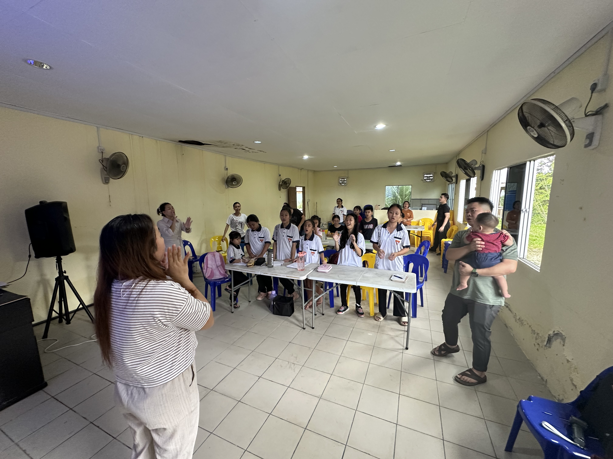
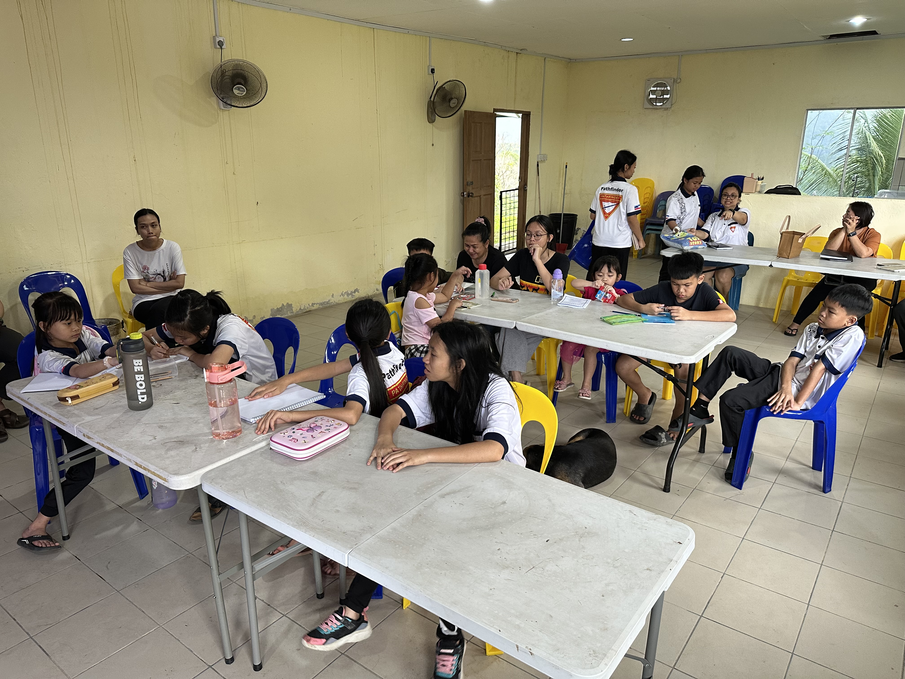
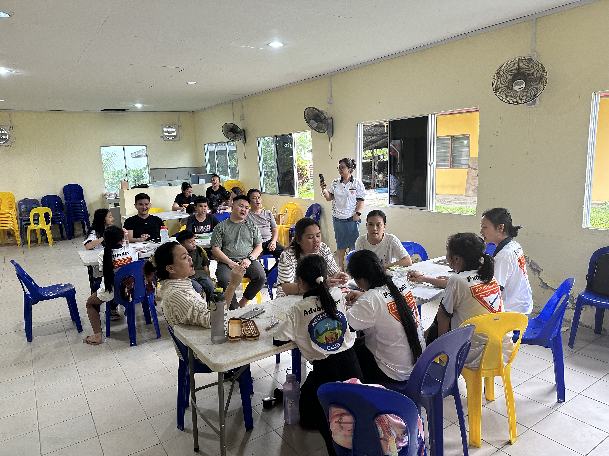

24 Januari 2026
Perjumpaan AY, Adventurer & Pathfinder Pertama
Pertemuan pertama tahun 2026 yang menghimpunkan Adventist Youth, Adventurer dan Pathfinder bagi perancangan serta pengukuhan rohani.
Tempat: Dewan Belia
Masa: 3.00 Petang
Kehadiran: 22 orang
Aktiviti
Para peserta merancang aktiviti dan sasaran sepanjang tahun 2026 melalui perbincangan kumpulan.
07 Februari 2026
Induction Night
Majlis malam induksi komitmen pelayanan Tahun 2026 bagi barisan Adventurer, Pathfinder, MIT & MG.


08 Februari 2026
Orientasi Kurikulum MIT
Sesi orientasi dan persediaan kepimpinan Master Guide in Training (MIT).
15 Februari 2026
Meeting Jabatan Belia Daerah Kapa
Penyelarasan hala tuju pelayanan belia peringkat daerah.
21 Februari 2026
Perjumpaan AY – Aktiviti Belia
Aktiviti Mengenal Karakter dalam Alkitab untuk memperkukuhkan kesatuan belia.
Kehadiran: 30 orang